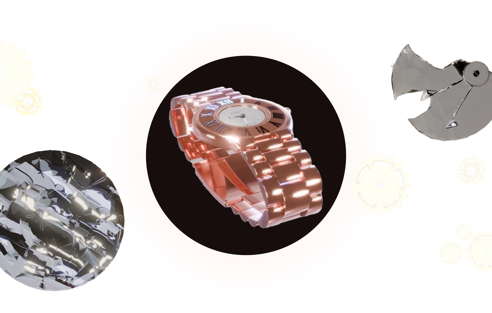
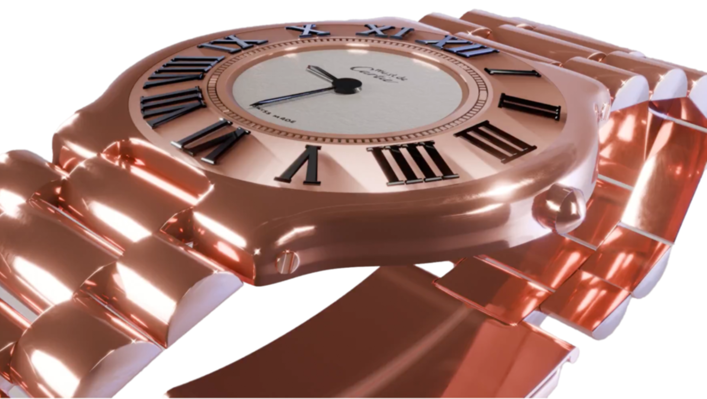
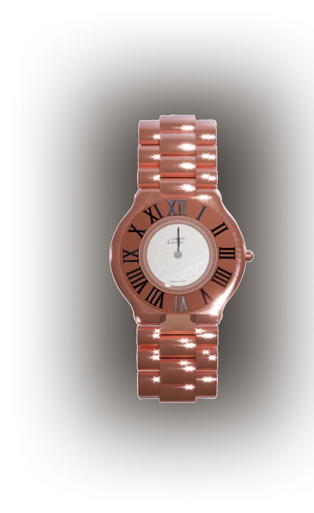
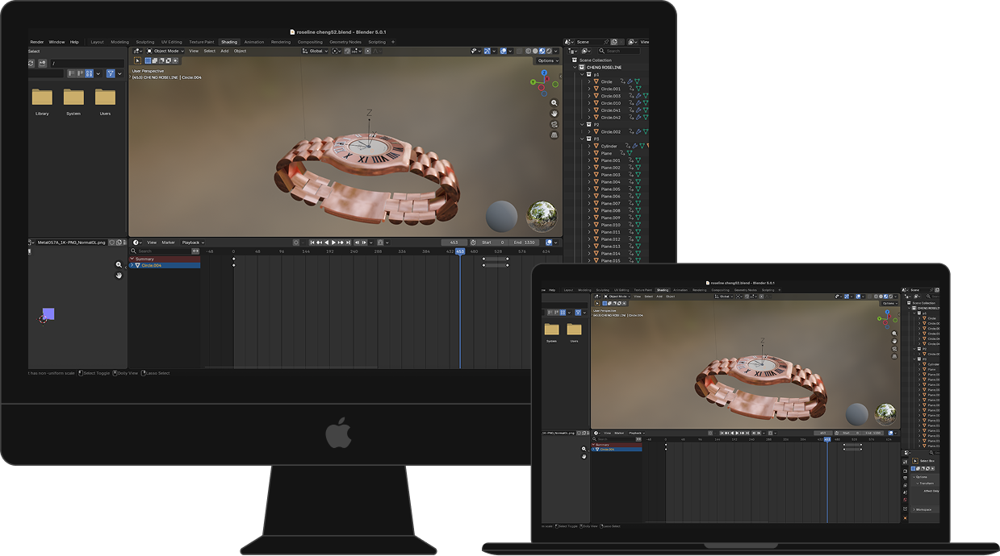
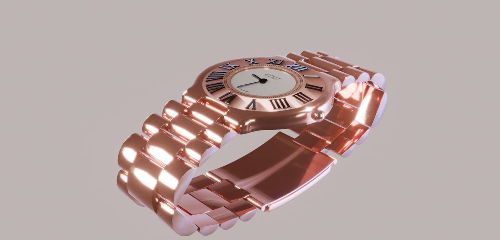
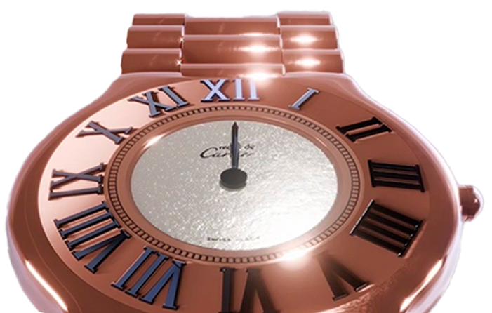
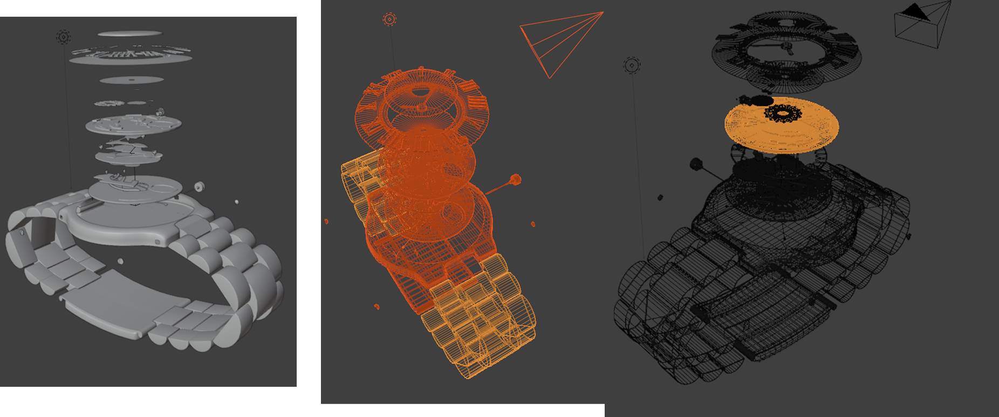
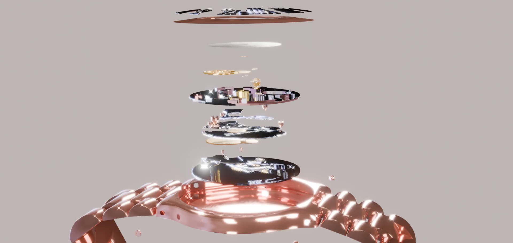
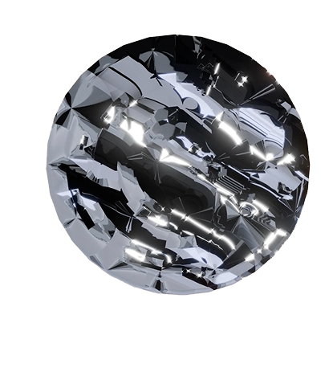
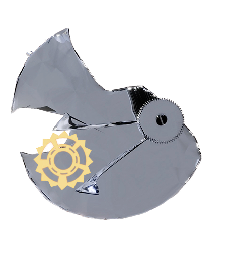

Cartier

Explication du contexte
Projet réalisé en novembre 2025 lors de mes premières séances sur Blender avec Henri Arbelot. L’objectif était de se familiariser avec la modélisation 3D à travers un objet en éclaté.
J’ai choisi une montre Cartier et en quelques jours, j’ai modélisé, animé, coloré et texturé l’ensemble, apprenant à gérer tous les aspects du workflow 3D et montrant ma progression rapide sur Blender.


TYPE DE PROJET : modelisation 3d
RENDU : réaliste
LOGICIEL UTILISÉ : blender
Couleur


J’ai choisi de modéliser une montre inspirée de Cartier pour travailler sur un objet à la fois technique et élégant. Ce modèle m’a permis d’explorer la précision des formes, la symétrie du cadran et le réalisme des matériaux comme le métal et le verre.
À travers ce projet, j’ai appris à structurer une modélisation complète, à gérer les proportions avec rigueur et à utiliser l’éclairage pour mettre en valeur les volumes et les détails.




Bon visionnage